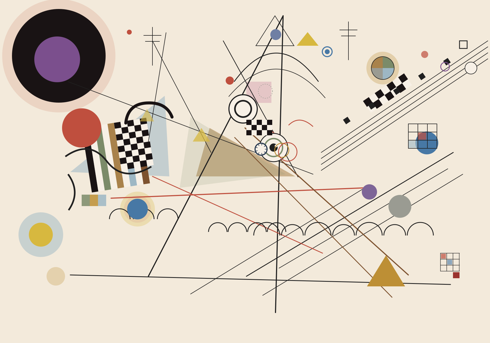

Composition VIII · Canon in D
After Kandinsky · fragments gather into instruments
🖱 Drag: gather fragments / Release: return to the original image
🖱 Click: emit a ripple ring from the pointer
⌨ 1·Piano 2·Violin 3·Guitar 4·MusicBox
⌨ 5·Gather all 0·Reset L·Lock
audio loading 0%
○
🎹 Piano [1]
○
🎻 Violin [2]
○
🎸 Guitar [3]
○
🎵 MusicBox [4]